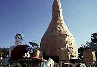
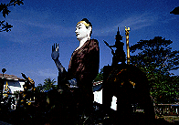
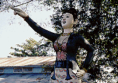
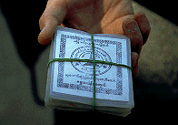
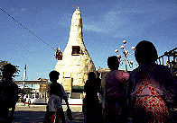
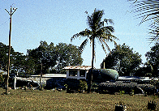
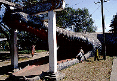

メイラムパゴダ/ヤンゴン
MaiLaMuPagoda/YANGON
ヤンゴン最強の珍寺である。
寺というより遊園地に近い雰囲気である。というよりまんま仏教テーマパークである。
園内、もとい境内には大仏や寝釈迦、その他得体の知れない仏像や人物像、動物像などが渦巻く狂気の空間である。
実はミャンマーに来て最初に見た寺がここであった。そのショックたるや、筆舌に尽くし難し。特に自動金箔奉納装置には大感激。

境内に入って最初に見えてくるのが上半身座像で下半身寝釈迦という何とも奇妙なポーズの仏像。噂では工事の途中から気が変わったらしい。見ているだけで疲れる。後ろの仏塔は金箔張替中のためムシロで覆われている。ミャンマーではパゴダのメインテナンスはよく行なわれており、数年に一回の割合で塗り替えや張り替えをするらしい。しかも私が訪れた乾季は改修工事のベストシーズンということもあり、この後もよくこの風景を見た。

ムシロの仏塔の裏手に回るといきなり大仏。周りには仏陀を慕った動物や人間が。

その内の一人。モード系。
何やら人だかりが出来ているので見てみると、仏塔の上の方まで舟のような入れ物がロープウェイのようにゆらゆらと登って行くではないか。聞けば参詣客が仏塔に張り付ける金箔を寄進しているのだという。そして寄進した人自身がロープを曵いて仏塔に届けるという素晴らしいシステムになっているのだ。これはやらねばと思い、早速金箔を購入した。

これが金箔。これを飾り立てた舟のような入れ物にいれる。

寄進した人達が皆でロープを引っ張る。子供達は（多分大人も）ほとんどレジャー感覚である。私も引っ張ってみた。子供騙しというなかれ。面白い。

ゆらゆらと登って行くMy金箔。窓の中には人が居て金箔だけを取り、入れ物だけが下に戻って来る。
今頃、私の届けた金箔があの奇妙なパゴダを金色に彩っているかと思うとチョット嬉しい。

占い屋や土産屋、ジオラマ仕立てのお堂などを過ぎると境内の最深部に到る。そこには50メートル以上はあろうかというどデカいコンクリート製のワニがいた。背中には果物がのっている。ワニの内部には絵が懸けられており、昔話が描かれている。え〜と確かワニとか果物とかが登場する話だったような気がしたが、忘れました。

で、ワニの口。中は小部屋になっており仏像が飾ってあった。
その他、奇妙な像に溢れたこのパゴダ、ヤンゴンのイチおし珍寺だった。
次のスポットへGO!
ミャンマーパゴダ列伝のページへ
珍寺大道場 HOME